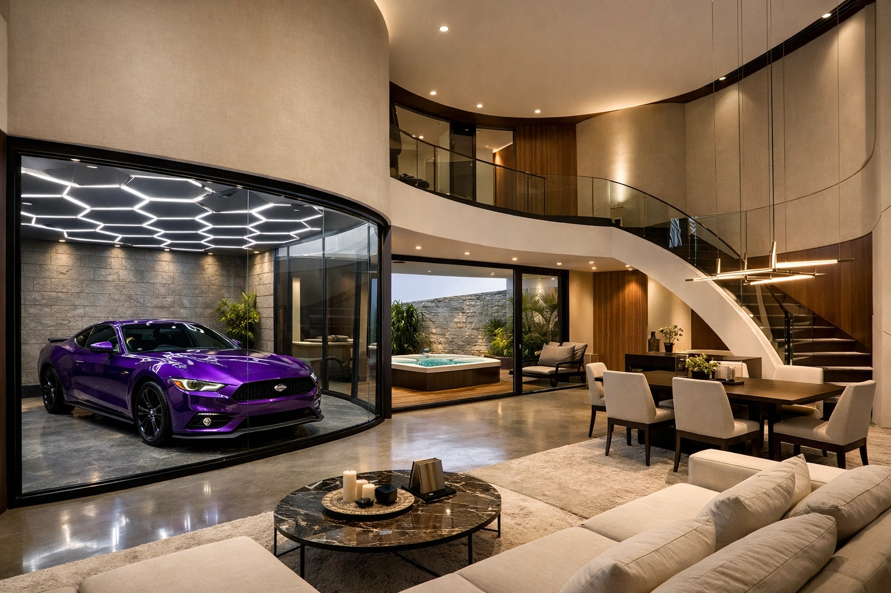
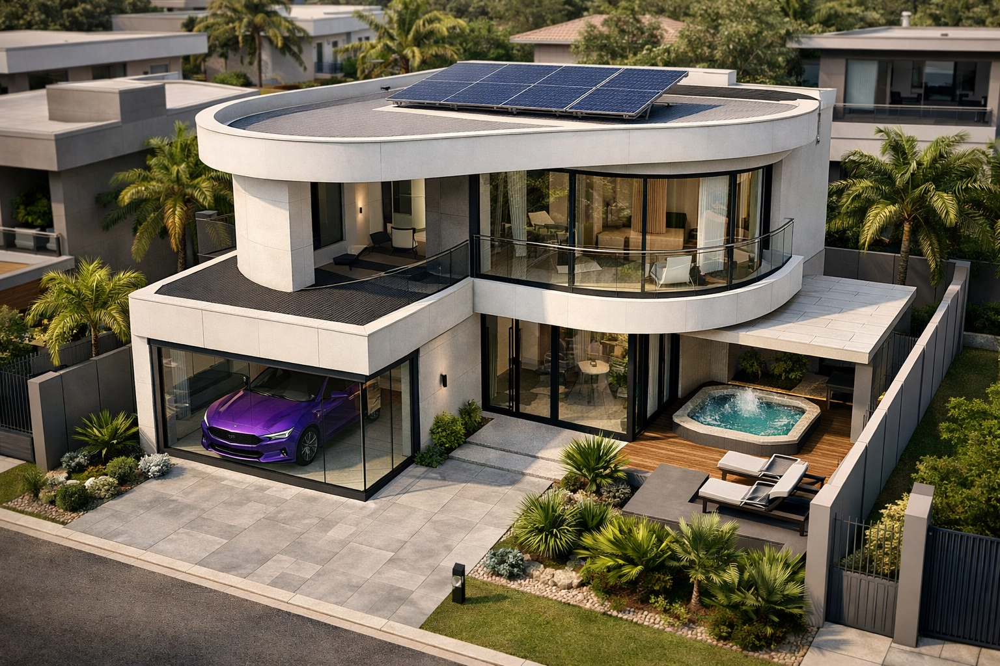
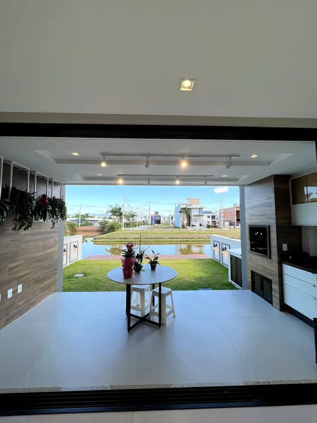
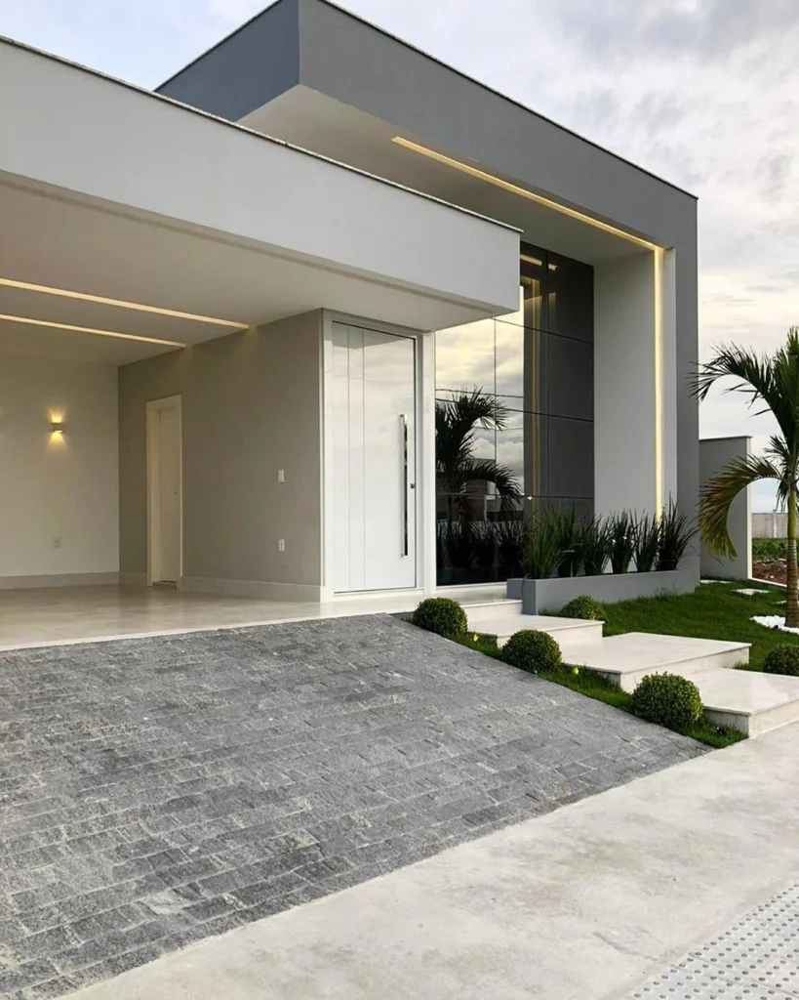
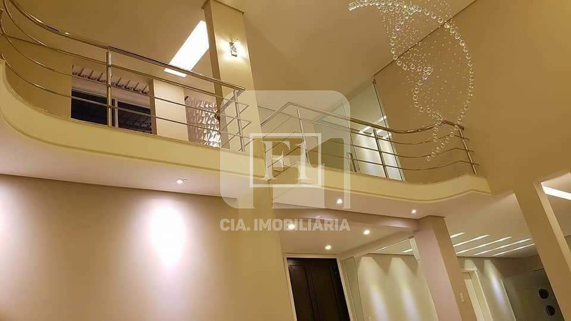
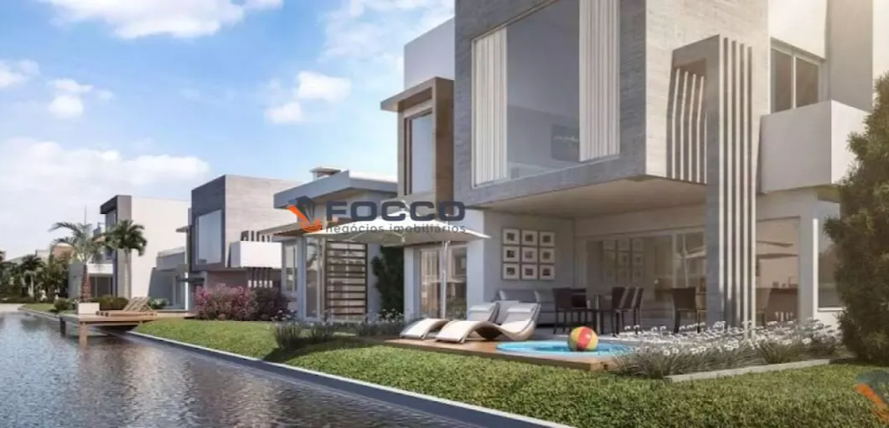
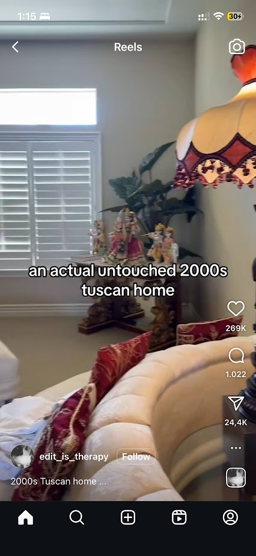

Visão Geral - Revisar se tem 100% do conteúdo
Não há nada mais forte no mundo do que uma ideia cujo tempo chegou.
📌 Sobre o Projeto
Este documento apresenta a especificação técnica completa para a construção de uma residência autossuficiente em sítio, localizado a aproximadamente 30 minutos de um centro urbano. O projeto contempla não apenas aspectos arquitetônicos e de design, mas também sistemas avançados de proteção e autossuficiência.
A casa foi concebida para integrar tecnologia moderna, sustentabilidade energética e sistemas de segurança que garantem total independência operacional em relação às redes públicas de energia, água e comunicação.
💰 Orçamento Estimado
| Item | Custo Estimado |
|---|---|
| Terreno | R$ 300.000 a R$ 500.000 |
| Construção | R$ 700.000 a R$ 900.000 |
| Mobília | R$ 80.000 a R$ 100.000 |
| Total Estimado | R$ 1.500.000 |
Detalhes do Projeto
📍 Localização
- Sítio localizado a 30 minutos da cidade grande
🏛️ Estrutura Arquitetônica
- Pé direito alto dentro da casa, proporcionando visibilidade do segundo andar para o primeiro (Ver referência)
- Quarto principal equipado com closet e banheiro amplos, incluindo chuveiro instalado no teto
- Quartos 2 e 3 com dimensões idênticas, sem closet ou banheiro próprio
- Segundo andar composto por: um lavabo e três quartos
- Primeiro andar sem lavabo
- Vidro do quarto principal ocupando toda a parede (abertura a partir de 1 metro de altura)
- Garagem "integrada" com a sala através de parede de vidro, permitindo visualização do interior
- Toda a parede da sala poderá ser aberta para conectar o ambiente interno com o externo
- Uma parte da área externa será coberta pelo teto, onde ficará instalada a jacuzzi
🔌 Acabamentos & Instalações
- Todas as tomadas serão instaladas com caixa invisível
- Banheiro do quarto principal com chuveiro e banheira separados (Ver referência). A área do chuveiro não terá divisória de vidro
⚡ Infraestrutura & Sistemas
- Sistema de painel solar dimensionado para economia de aproximadamente 90% na conta de energia
- Carregador de carro elétrico instalado na garagem
- Considerar possibilidade de substituir ar condicionado convencional por sistema de climatização central, similar ao padrão americano
- Todos os chuveiros e torneiras conectados a aquecedor central a gás
Ideias & Decoração
👔 Closet & Quarto
- Organização do closet incluindo: roupas, sapatos, espelho, banco, decorações e action figures
- Escolher um dos tetos para receber instalação de efeito estrelado
🛋️ Sala & Cozinha
- Quadro com pintura de cavaleiros em batalha montados em cavalos
- Lustre grande suspenso que se estende do segundo andar até o primeiro
- Microondas e forno embutidos em conjunto; máquina de lavar louça com instalação invisível
- Quadro da Santa Ceia posicionado próximo à mesa de jantar
- Espelhos estrategicamente posicionados na sala para criar sensação de amplitude
- Na parede da escada, exposição de álbuns de vinil
🤖 Tecnologia & Automação
- Cortinas e janelas motorizadas com controle via Alexa
- Película reflexiva de privacidade aplicada em todas as janelas
- Echo Show 15 instalado próximo à pia da cozinha
- TV The Frame Samsung na sala com Soundbar Samsung
🌳 Área Externa
- Bandeira do Brasil hasteada na área externa
- Iluminação da garagem com sistema de luz colmeia, similar às utilizadas em lojas de estética automotiva
Proteção
Casa autossuficiente
O sistema de proteção divide-se em 7 blocos: Terreno, Blindagem Estrutural, Energia, Água, Ar/Comida, Comunicação e Segurança.
Terreno
- Latitude 20-30° (zona templada, baixa umidade, geologicamente estável)
- Solo argilo-arenoso → drena bem e mantém túneis sem escorregar
- Altitude mínima 150 m acima do nível do mar → evita inundações e mantém temperatura 2-3 °C menor
- Sem linha de transmissão de alta-tensão em 2 km (campo eletromagnético < 0,2 µT)
- Sem curso d'água natural visível no topo de morro (evita olho-d'água sendo redirecionado)
- Compre via pessoa física + offshore; nunca coloque o CPF na matrícula (usa "procuração irrevogável" com cláusula de não revogação)
- Faça um poço artesiano antes da escritura: se encontrar água a < 40 m, ótimo; senão, abandona e procura outro
Blindagem Estrutural
- Formato "sanduíche" para 4 camadas: concreto armado 15 cm + malha de Faraday (malha de cobre 2 mm) + espuma de poliuretano 10 cm + alvenaria interna de tijolo maciço 20 cm
- Janelas: vidro triplo com película de índio-estanho (ITO) 15 Ω/sq. Atenua 40 dB em 1-5 GHz
- Porta principal: aço inox 6 mm com vedação de lâmina de beryllium-cobre → bloqueio até 18 GHz
- Telhado: telha de barro vidro (barro + vidro reciclado) pintada com tinta acrílica à base de cianina (cor azul marinho, λ≈450 nm). Camada final de resina PU com microesferas de titânio: reflete 92% da radiação UV-B e 60% da infravermelha
- Calha metálica liga-se à malha de aterramento: quando houver sobrecarga EM (ex.: pulso EMP ou "chem-electric"), a corrente desce para haste de cobre 2 m cravada no solo úmido
- Sob o piso: greide de brita 30 cm + geomanta de HDPE 1,5 mm → evita infiltração de "nanopoeira" (partículas de óxido de alumínio/bário usadas em aerosol)
Energia – Fora da Rede
- Painel bifacial 450 W × 24 un. → 10,8 kWp. Inclinado em β = latitude −15° (mais produção inverno)
- Baterias LiFePO4 48 V / 400 Ah → 19,2 kWh úteis
- Inversor híbrido 5 kW com modo "ilha" puro; desabilita anti-ilhamento (altera firmware com script via CAN)
- Gerador diesel 3 cil. 5 kW estacionado em caixa hermética com escapamento vertical 4 m (dispersa chama e diminui assinatura térmica). Tanque subterrâneo 1.000 L com aditivo anticondensação
- Turbina Savonius 500 W no topo do telhado (ventos aleatórios de 2-15 m/s)
- Controlador MPPT duplo: painel + eólica. Ambos comutados por relé de estado sólido (sem Wi-Fi)
Água
- Poço artesiano 60 m com revestimento de PVC 100 mm + anel de bentonita
- Bomba submersa 24 V CC, sem variador de frequência (evita RF)
- Caixa d'água inox 3.000 L dentro de câmara subterrânea (temperatura constante 16 °C)
- Filtro triplo: 50 µm + carvão ativado + membrana 0,1 µm
- UV-C 40 W com tubo de quartzo: desliga quando sensor de porta abre (evita gravação de LED indicadora)
- Esgoto: biodigestor 2 m³ + campo de infiltração com tubo DN 100 perfurado; saída 0,5 m acima do lençol (nunca será inspecionado se não houver ralo ligado à rede)
Ar / Alimento
- Ventilação: dutos de 150 mm com trocador de calor aço-inox + filtro HEPA 13 + carvão ativado 1 kg
- Overpressure 5 Pa (ventilador centrífugo 24 V, 80 m³/h) impede entrada de poeira externa
- Estufa geodésica 6 m diâmetro, cobertura policarbonato 8 mm. Aquaponia: tanque 1.000 L de tilápia + growbed 300 L de argila expandida. Produz 25 kg peixe/ano + 40 kg vegetais
- Bancada de microgreens com LED full-spectrum 6500 K ligado em 18 h fotoperíodo
- Câmara fria subterrânea 2 m × 1,5 m isolamento EPS 200 mm + porta hermética. Mantém 8 °C sem compressor
Comunicação – Fora das Operadoras
- LoRa meshtastic 868 MHz, 4 nós: casa, torre 6 m, portão, mirante. Alcance 15 km sem infraestrutura
- HF pirata 40 m (7 MHz) + antena dipolo 2 × 10 m para DX
- Satélite: Starlink "RV" + roteador MikroTik w/o Wi-Fi (só ethernet) dentro de caixa metálica; desliga phased-array quando não usar (remove fonte 48 V)
- Rede interna: cabo FTP Cat-6A, switch unmanaged, nenhum chip "smart"
- EMP hardening: todos os cabos passam por tubo metálico aterrado; surge suppressor gasoso 600 V na entrada antes do ONT
Segurança / Vigilância Reversa
- Câmeras térmicas 320× só ligadas por PoE dentro de caixa metálica; DVR local sem cloud
- Sensores PIR duplos 10 µm + 5 µm para reduzir falso positivo de inseto
- Drone FPV 7" com câmera 1,6 µm IR para patrulha noturna; voo 25 min, bateria 6S 5 Ah
- Cerca 12 V com capacitor de choque 2 J (não mata, só derruba)
- Janelas com sensor de vibração piezo; se estilhaçar → sirene 120 dB + flash 12 V 55 W
- Cofre-águia embutido no concreto: abertura por combinação mecânica + chave tubular (sem eletrônica)
- Cão de rastreamento: Belgian Malinois, treinado para parar em "quiet" (sem latido)
Problemas & Soluções
Inventário organizado das ameaças mais citadas em círculos alternativos, seguido da ação prática que neutraliza ou reduz cada uma.
Ameaças 1-5
Ameaças 6-10
Ameaças 11-15
Ameaças 16-20
Ameaças 21-25
Checklist & Ferramentas
📋 Checklist Rápido Antes da Fundação
- Faça um "radio-sweep" com analisador de espectro 100 kHz – 6 GHz no local; anote picos.
- Cave 2 m e mande amostra de solo para análise de metais-pesados: Se houver > 50 ppm de Al ou 5 ppm de Ba, troque de lote (indica spray prévio).
- Teste nível de ruído de fundo RF com loop 60 cm: deve ficar abaixo de −100 dBm em 433 MHz; senão, afaste-se 500 m.
- Registre o poço como "água para construção" (usa 50% da vazão real na papelada) → diminui taxação.
🛠️ Ferramentas de Verificação Indispensáveis
Galeria
Imagens de referência e inspiração para o projeto.

Sala com paredes que abrem totalmente para o exterior

Sala com paredes que abrem totalmente para o exterior

Sala com paredes que abrem totalmente para o exterior

Sala com paredes que abrem totalmente para o exterior

Sala com paredes que abrem totalmente para o exterior

Linhas de LED assim para iluminação decorativa

Pé direito alto - poder do segundo andar ver o primeiro

Uma parte da casa cobrindo o exterior para jacuzzi

Referência: Tuscan Homes
Tips & Observações
- Ver uma forma econômica de telhado. Se possível, não ter. Telhado ser azul.
- Ver aquelas coisas de tijolo que sai muito mais barato e sustentável.
- Ter um projetor no teto em cima da Jacuzzi apontando para a parede mais perto.
- Usar o menor quarto como escritório.
- Usar piso radiante.
- Usar filtro de barro.
- Banheiro do quarto principal ter o chuveiro e a banheira separados. Onde terá chuveiro, não vai ter vidro.
- Quando estiver pronto, chamar umas 20 pessoas da sala de aula para um reencontro da turma.